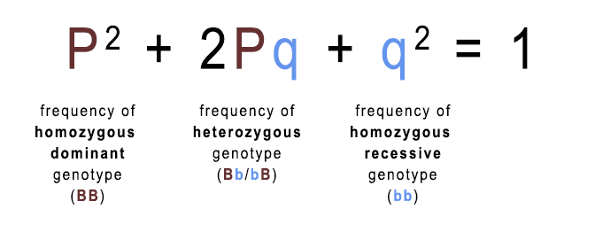

Assumptions of the Model
- None of the the four forces listed above are brought to bear on the model: in effect, evolution does not take place.
- There is random sexual reproduction (no sexual selection).
- There is an infinite population size (therefore it is not susceptible to genetic drift).
- Generations are non-overlapping, i.e. when a new generation is born, the old generation dies out.
- Body cells are diploid.
Clearly, this is not a realistic scenario, so of what use is the Hardy-Weinberg equilibrium model?
The answer is that it establishes a null model, against which changes in a system can be measured after the application of one or all of the four forces listed above.
Possible Genotypes in a Diploid Cell
To keep things trackable, we focus on one gene, e.g. the one for eye colour *, where the alleles are:
- B = brown eyes (dominant)
- b = blue eyes (recessive)
By convention a capital letter represents the dominant allele, and a lower-case letter the recessive allele.
* This is simplified for the sake of the example. In reality, eye-colour is determined by multiple alleles.
| Father | |||
|---|---|---|---|
| B | b | ||
| Mother | B | BB | bB |
| b | Bb | bb | |
The possible genotypes for the B and b alleles are:
- BB: homozygous dominant, brown eyes.
- Bb/bB: heterozygous, brown eyes (the dominant allele will always trump the recessive allele).
- bb: homozygous recessive, blue eyes.
Calculating Genotype Frequencies
We can calculate the genotype frequencies for a population only if we know the percentage of that population in which the homozygous recessive genotype (bb) has been expressed.
That is, in any population we could, in theory, count all the people who had the recessive genotype (bb, blue eyes).
The same could not be done for people with brown eyes: they might have either the homozygous dominant genotype (BB) or the heterozygous genotype (Bb/bB).
The Hardy-Weinberg Equation
The Hardy-Weinberg equation is used to measure genotype frequencies in a population that is in equilibrium, i.e. not evolving.
As can be seen from the following graphic,
- P2 is the frequency of the homozygous dominant genotype (in our example, BB)
- 2Pq is the frequency of the heterozygous genotype (Bb/bB) and
- q2 is the frequency of the homozygous recessive genotype (bb).
- The total value is always 1.
Furthermore:

- P is the frequency of the dominant allele (B)
- q is the frequency of the recessive allele (b)
- The total value is always 1.
Example Problem
Twenty individuals, out of a population of a hundred, have blue eyes. The rest have brown eyes. For the population as a whole, what is the frequency of:
- the dominant B allele?
- the recessive b allele?
- the homozygous recessive bb genotype?
- the homozygous dominant BB genotype?
- the heterozygous Bb/bB genotype?
Steps to the Solution
We have already been supplied with the information that twenty percent of the population expresses the homozygous recessive genotype (bb).
1) In order to plug this value into the equation, where it will replace q2, we must convert it from a percentage to a frequency:
- bb ÷ 100 = q2
- 20 ÷ 100 = 0.2,
- q2 = 0.2
The equation can now be rewritten as:
- P2 + 2Pq + 0.2 = 1
2) To solve the equation we need to get the value of q, i.e. √q2:
- q2 = 0.2,
- √ 0.2 = 0.45
- q = 0.45
3) Now that we have the value of q, we can derive the value of P:
- P + q = 1,
- 1 − q = P,
- 1 − 0.45 = P,
- P = 0.55.
4) Now that we have the value of P we can calculate the value of P2:
- P2 = 0.55 × 0.55 = 0.3.
The equation can now be rewritten as:
- 0.3 + 2Pq + 0.2 = 1
5) Now we calculate the value of 2Pq:
- 0.3 + 2Pq + 0.2 = 1,
- 1 − 0.5 = 2Pq,
- 2Pq = 0.5.
The product of the equation is:
- 0.3 + 0.5 + 0.2 = 1
Answers
We know that:
- P2 = BB,
- 2Pq = Bb/bB,
- q2 = qq.
We also know that:
- P = B, and
- q = b.
Therefore, the frequency of the:
- dominant B allele is 0.55,
- recessive b allele is 0.45,
- homozygous recessive bb genotype is 0.2,
- homozygous dominant BB genotype is 0.3, and
- heterozygous Bb/bB genotype is 0.5.
Calculator
To use the calculator you must already have a number representing the percentage of the population expressing the homozygous recessive (bb) genotype.
Note: both genotype and phenotype totals do not always equal 1 or 100% respectively, due to rounding. This is expected.
Glossary
- Evolution
- The change in allele frequencies in a population over time.
- Allele
- Version of a gene, e.g. the gene for eye colour.
- Genotype
- The combination of two related alleles in a cell.
- Phenotype
- The expression of the gene in the organism, e.g. brown eyes.
- Allele frequency
- The proportion of alleles in a gene pool that are either dominant, e.g. code for brown eyes, or recessive, e.g. code for blue eyes.
- Genotype frequency
- The proportion of allele combinations in a cell.
- Homozygous dominant chromosome
- Both the allele inherited from the mother and the one inherited from the father are dominant.
- Homozygous recessive chromosome
- Both the allele inherited from the mother and the one inherited from the father are recessive.
- Heterozygous chromosome
- One allele is dominant and one is recessive.
Further information
I found the following Bozeman Science videos on YouTube very helpful: